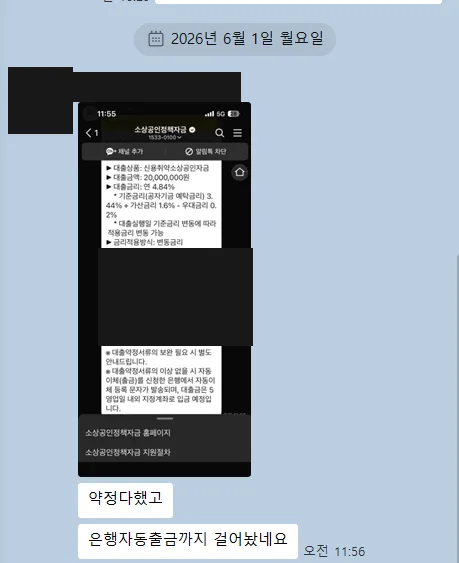
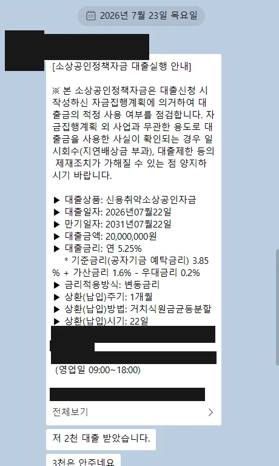

짧은 답: 됩니다. 2026년 8월 기준 비즈니스 메이커의 실행 기록 24건 중 11건이 폐업 후 재창업, 5건이 신용점수 600점대(KCB·NICE 중 낮은 쪽), 6건이 세금 체납 이력(정리 후 진행)이 있는 사례였습니다. 긴 답은 "어떤 자금을, 어떤 순서로 준비하느냐"에 달려 있고, 아래에 그 기준을 실측 숫자로 적었습니다.
기준일 2026년 8월 28일 · 아래 모든 숫자는 공개 실행 기록과 원자료 CSV에서 확인할 수 있습니다. 실행 기록은 계속 추가되므로 최신 수치는 실행 기록 페이지 기준입니다.
신용 600점대에서 실행된 5건 — 전부 공개
골라낸 게 아니라, 실행 기록에서 신용점수 600점대였던 사례 전건입니다. 금액은 2,000만~3,000만원, 금리는 연 2.5~5.25%였습니다.
| 실행 | 지역·업종 | 자금 | 금액 | 금리(실행 시점) | 첫 상담→정산 | 비고 | 근거 |
|---|---|---|---|---|---|---|---|
| 2026-08 | 경남 교육서비스업 | 지역신용보증재단 보증부 대출 | 3,000만원 | 연 3.141% | 45일 | — | 실행 기록 보기 |
| 2026-08 | 경기 서비스업 | 소진공 신용취약소상공인자금 | 3,000만원 | 연 4.14% | 321일* | — | 실행 기록 보기 |
| 2026-07 | 대구 요식업 | 대구신보재단(청년고용연계자금) | 3,000만원 | 연 2.5% | 16일 | 재창업 | 실행 기록 보기 |
| 2026-07 | 충남 제조업 | 소진공 신용취약소상공인자금 | 2,000만원 | 연 5.25% | 505일* | 재창업 | 실행 기록 보기 |
| 2026-06 | 경남 유통(도소매) | 소진공 신용취약소상공인자금 | 2,000만원 | 연 4.84% | 41일 | — | 실행 기록 보기 |
* 321일·505일 건은 조건을 만든 뒤 실행까지 장기 관리한 사례입니다 — 지금 안 되는 상태여도 경로가 있다는 뜻이기도 합니다. 참고로 실행 기록 24건 전체의 신용 분포는 600점대 5 · 700점대 10 · 800점대 6 · 900점대 3입니다.
정책자금은 대출이며 상환 의무가 있습니다. 승인 여부와 조건은 각 심사 기관이 결정하고, 비즈니스 메이커는 특정 결과를 보장하지 않습니다. 착수금·진행비 등 실행 전 비용은 일절 받지 않고, 자금이 실제 실행된 경우에만 성공보수를 받습니다.
폐업 후 재창업 — 24건 중 11건이 이 경우였습니다
재창업 사례 11건이 이용한 경로는 이렇습니다: 지역 신용보증재단 보증부 대출 6건, 소진공 재도전특별자금 2건(실측 연 4.94%), 신용취약소상공인자금 1건(연 5.25%), 청년고용연계자금 1건, 지역 특화자금 1건. 폐업 이력은 감점 요인이라기보다 "어느 자금 트랙으로 갈지"를 정하는 조건에 가깝습니다 — 재도전특별자금은 아예 폐업 후 재창업자를 위해 설계된 자금입니다.


신청 전에 확인할 5가지
- 현재 연체 여부 — 금융 연체가 진행 중이면 대부분의 정책자금이 어렵습니다. 이 경우 연체 해소가 신청보다 먼저입니다.
- 세금 체납 — 국세·지방세 체납 상태로는 신청이 막히는 자금이 대부분입니다. 완납 또는 분납 승인 후 진행합니다. 실행 기록의 체납 이력 6건도 정리 후 실행된 사례입니다.
- 폐업 정리 상태 — 이전 사업의 폐업 신고와 채무 정리가 돼 있어야 재도전 트랙 심사가 깔끔합니다.
- 재창업 사업자등록과 업력 — 업력이 짧아도 창업·재도전 자금 트랙이 있습니다. 실행 기록에는 업력 1년 미만 실행 사례도 있습니다.
- 매출 증빙 — 초기라 매출이 작아도, 있는 만큼을 증빙으로 정리해 두는 것이 한도 산정에 유리합니다.
지금은 안 되는 경우
현재 연체 중이거나, 체납이 정리되지 않았거나, 제외 업종(유흥업 등)이라면 지금 신청해도 결과가 나오기 어렵습니다. 이때 필요한 건 "무조건 넣어보자"가 아니라 조건을 만드는 순서입니다 — 무엇을 먼저 정리하고 언제 다시 접수할지. 위 표의 321일·505일 사례가 그 경로로 실행까지 간 기록입니다. 진단에서 가능성이 낮으면 낮다고 먼저 말씀드립니다.
자주 묻는 질문
신용점수가 몇 점부터 정책자금이 가능한가요?
폐업한 적이 있어도 정책자금을 받을 수 있나요?
세금 체납이 있으면 어떻게 되나요?
저신용이면 금리가 많이 높아지나요?
내 신용·이력이면 어떤 트랙인지
위 24건과 같은 기준으로 무료 진단해 드립니다. 가능성이 낮으면 낮다고, 조건 회복 순서까지 말씀드립니다.
카카오톡 무료 진단 전화 1666-2425